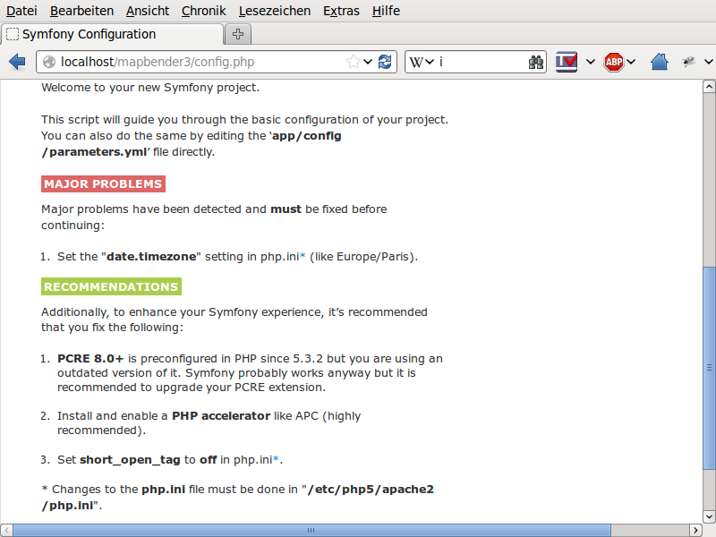

Installation auf Windows¶
Beachten Sie die Systemvoraussetzungen wo Sie auch die Download-Links für Mapbender3 finden. Installieren Sie die notwendigen Komponenten:
- fügen Sie den Pfad zum PHP-bin Verzeichnis zu Ihrer PATH Variable hinzu
- aktivieren Sie die PHP Erweiterungen in der php.ini Konfigurationsdatei
- laden Sie das Apache Modul rewrite
# php.ini
extension=php_curl.dll
extension=php_fileinfo.dll
extension=php_gd2.dll
extension=php_intl.dll
extension=php_pdo_pgsql.dll
extension=php_pdo_sqlite.dll
extension=php_pgsql.dll
extension=php_openssl.dll
extension=php_mbstring.dll
Für die Entwicklung:
# php.ini
extension=php_bz2.dll
Zusätzlich für PHP 7:
# php.ini
extension=php_zip.dll
extension=php_bz2.dll
# unter Windows Datei httpd.conf (Kommentar # entfernen) und Apache neu starten
LoadModule rewrite_module modules/mod_rewrite.so
Erstellen Sie den Apache Alias. Es gibt für Windows mehrere Möglichkeiten. Eine übersichtliche Möglichkeit ist, eine Datei mapbender3.conf zu erstellen und auf diese in der httpd.conf zu verweisen.
- Erstellen Sie einen Unterordner “alias” im Verzeichnis <apache>/conf. Legen Sie die Datei mapbender3.conf dort ab. (Dieses Verzeichnis können Sie dann auch nutzen, um dort weitere Alias-Definitionen übersichtlich abzulegen.)
- Verweisen Sie in der Datei httpd.conf (im Verzeichnis <apache>/conf/) auf diese Datei mapbender3.conf.
In der httpd.conf:
# Verweis auf Mapbender3 Alias
Include "conf/alias/mapbender3.conf"
In der mapbender3.conf:
Alias /mapbender3 c:/mapbender3/web/
<Directory c:/mapbender3/web/>
Options MultiViews FollowSymLinks
DirectoryIndex app.php
Require all granted
RewriteEngine On
RewriteBase /mapbender3/
RewriteCond %{REQUEST_FILENAME} !-f
RewriteRule ^(.*)$ app.php [QSA,L]
</Directory>
Wir gehen in diesem Beispiel davon aus, dass Mapbender3 direkt unter C:/ entpackt wurde (siehe das Kapitel Systemvoraussetzungen und den Download für Details). Sie können auch einfach ein anderes Verzeichnis wählen. Passen Sie dann nur diese Apache mapbender3.conf Datei oben an, indem Sie auf das richtige Verzeichnis verweisen.
Starten Sie den Apache Webserver neu.
Optionale Features¶
Mit den folgenden Schritten kann die Performance unter Windows gesteigert werden.
SASS Compiler¶
Der SASS Compiler ist Bestandteil von Mapbender 3.0.5 und seit Version 3.0.6.0 sorgt ein Filter dafür, dass die generierten CSS Anweisungen in eine temporäre Datei abgelagert und nicht in einer Pipe ausgeliefert werden.
mod_fcgid¶
Der Handler “mod_fcgid” ist für Windows Installationen mit Apache empfehlenswert, weil darüber Serveranfragen parallel ausgeführt werden können. Diese Anleitung ist ein Vorschlag des Deployments, es gibt dabei aber auch mehrere Variationen, auf die wir im Rahmen dieser Doku nicht eingehen können.
Der gängige Weg ist, PHP einfach als Modul in den Apache einzuhängen:
# LoadModule php5_module "c:/bin/php/5.6.30/php5apache2_4.dll"
# AddHandler application/x-httpd-php .php
# configure the path to php.ini
# PHPIniDir "c:/bin/php/5.6.30"
Diese Methode wird gegen die FCGID Methode ausgetauscht. Sie benötigt etwas Vorbereitung, da das Modul nicht automatisch bei den Apache Installationen mitgegeben wird.
- Webseite: https://httpd.apache.org/mod_fcgid/
- Download für Windows (VC 11, bitte Abhängigkeit beachten): https://www.apachelounge.com/download/VC11/ und dort die modules-...zip Datei.
- Entpacken Sie die mod_fcgid.so Datei aus dem Archiv in das module-Verzeichnis von Apache.
In der httpd.conf:
# FCGI
LoadModule fcgid_module "modules/mod_fcgid.so"
FcgidInitialEnv PHPRC "c:/bin/php/5.6.30"
AddHandler fcgid-script .php
FcgidWrapper "c:/bin/php/5.6.30/php-cgi.exe" .php
Fügen Sie in der Mapbender-Apache-Site Datei (mapbender.conf), den “ExecCGI” Parameter hinzu, zum Beispiel:
<Directory c:/srv/mapbender3-starter-3.0.6.0/web/>
[...]
Options MultiViews FollowSymLinks ExecCGI
[...]
</Directory>
WinCache PHP (optional)¶
Die Windows Cache (WinCache) Erweiterung für PHP ein PHP-Beschleuniger, der verwendet wird, um die Geschwindigkeit von PHP-Anwendungen zu erhöhen. Die Erweiterung enthält PHP opcode cache, user data cache, session cache, file system cache und relative path cache.
Informationen dazu unter:
- https://www.iis.net/downloads/microsoft/wincache-extension
- https://sourceforge.net/projects/wincache/
WinCache Installation
- Download: https://sourceforge.net/projects/wincache/
- Der Download ist ein selbst extrahierendes Archiv (.exe)
To install and enable the extension, use the following steps:
Unpack the package that is appropriate for the PHP version you are using.
Copy the php_wincache.dll file into the PHP extensions folder. Typically this folder is called "ext" and it is located in the same folder with all PHP binary files. For example:
"C:\Program Files\PHP\ext".
Using a text editor, open the php.ini file, which is usually located in the same folder where all PHP binary files are. For example:
"C:\Program Files\PHP\php.ini".
Add the following line at the end of the php.ini file:
extension = php_wincache.dll
Save and close the php.ini file.
session.handler auf WinCache umstellen:
To change the location of the session file use session.save_path directive.
sesion.save_handler = wincache
session.save_path = C:\inetpub\tmp\session\
wincache.reroute_enabled aktivieren
The reroutes are not enabled by default. To enable them, set the reroute_enabled directive in either the php.ini or the .user.ini.
wincache.reroute_enabled = 1
OpCache (optional)¶
OpCache ist eine PHP-Erweiterung, die seit PHP >= 5.5.5 zwar ausgelifert, aber per Voreinstellung nicht freigeschaltet ist.
Mehr info: https://www.sitepoint.com/understanding-opcache/
OPcache Installation
In der php.ini:
[opcache]
; Pfad zur php_opcache.dll
zend_extension=C:/bin/php/5.6.30/ext/php_opcache.dll
; Determines if Zend OPCache is enabled
opcache.enable=1
; Determines if Zend OPCache is enabled for the CLI version of PHP
;opcache.enable_cli=0
; The OPcache shared memory storage size.
opcache.memory_consumption=64
; The amount of memory for interned strings in Mbytes.
opcache.interned_strings_buffer=4
; The maximum number of keys (scripts) in the OPcache hash table.
; Only numbers between 200 and 100000 are allowed.
opcache.max_accelerated_files=2000
; The maximum percentage of "wasted" memory until a restart is scheduled.
opcache.max_wasted_percentage=5
Symfony empfiehlt, den opcache.max_accelerated_files Wert höher zu setzen: http://symfony.com/doc/3.1/performance.html#optimizing-all-the-files-used-by-symfony
Überprüfung¶
und prüfen Sie, ob der Alias erreichbar ist:
Öffnen Sie das Symfony Welcome Script config.php. Das Skript prüft, ob alle notwendigen Komponenten installiert wurden und ob die Konfiguration erfolgte. Sofern noch Probleme vorliegen, sollten diese behoben werden.
{kind=link}
Passen Sie die Mapbender3 Konfigurationsdatei parameters.yml (app/config/parameters.yml) an und definieren Sie die Datenbank, die Sie erzeugen möchten. Mehr Informationen dazu finden Sie im Kapitel Konfiguration der Datenbank.
database_driver: pdo_pgsql
database_host: localhost
database_port: 5432
database_name: mapbender3
database_path: ~
database_user: postgres
database_password: geheim
Rufen Sie die app/console Befehle über die php.exe auf. Hierzu müssen Sie ein Standardeingabefenster öffnen.
c:
cd mapbender3
php.exe app/console doctrine:database:create
php.exe app/console doctrine:schema:create
php.exe app/console assets:install web
php.exe app/console fom:user:resetroot
php.exe app/console doctrine:fixtures:load --fixtures=./mapbender/src/Mapbender/CoreBundle/DataFixtures/ORM/Epsg/ --append
php.exe app/console doctrine:fixtures:load --fixtures=./mapbender/src/Mapbender/CoreBundle/DataFixtures/ORM/Application/ --append
Hiermit ist die Installation von Mapbender3 fertig.
Prüfen Sie die config.php erneut
Sie können Mapbender3 nun nutzen. Starten Sie Mapbender3 im Entwicklermodus, indem Sie das Skript app_dev.php aufrufen.
Hinweis: Klicken Sie auf den Login-Link oben rechts, um zur Abmeldung zu gelangen. Melden Sie sich mit dem neu erstellten Benutzer an.
Wenn Sie mehr über Mapbender3 erfahren möchten, schauen Sie sich das Mapbender3 Quickstart Dokument an.